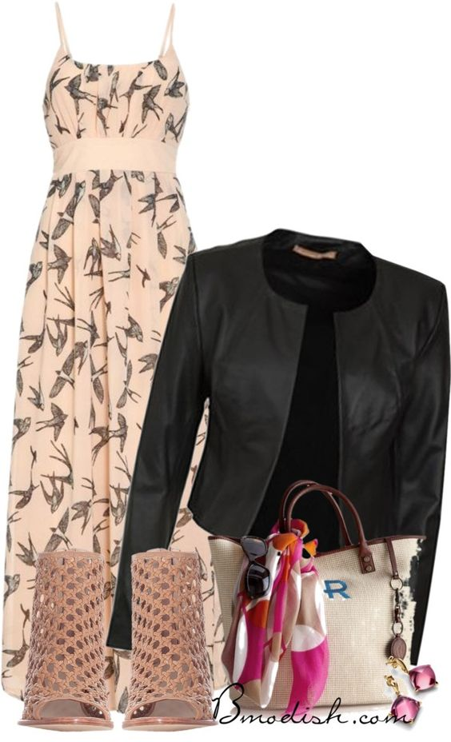

winter is a cold season and so some heavy clothes to prevent the cold is opted.The following can work for winter;
Shearling Accents & Bright Colors
A coat with shearling accents. Often, you’ll see this as an oversized denim jacket with a shearling collar or cuffs,this offers a stylish way to add texture to a look while keeping warm.A coat, trench or long jacket in a bright and vibrant shade works magic too. Here,i'll showcase a pink option, an on-trend mustard shade and an elegant pale blue coat. Each gives a look it’s own added glam. Don’t feel obligated to wear these with just neutral looks! These jackets look beautiful styled with complementary shades or as a standout piece.

Tonal outfits
Head-to-toe monochromatic looks are another go-to trend.A warm brown, camel-colored outfit, but shades of grey or a mix of white and cream are equally chic. The key to wearing this trend is to play with a few tones that complement each other without perfectly matching. Here, we’ve paired a camel-colored turtleneck with a slightly darker brown pant, red-brown boots and either a tan jacket or, if you’re craving added pattern, a long, checked coat that nods to the tones of the other pieces. Give this one a try for drinks with a girlfriend or a work event.

Here the season gets warmer and so no more heavy clothes,we can explore a variety of outfits
Maxi Dress
Jean jackets are great, but so are leather jackets. Pull a leather jacket on over a floral maxi dress to give your spring look a little edge. This sweet meets biker look will be a spring favorite.
Orange hues: spring color
Spring means color. Orange is a bright and stylish look that comes in so many loveable shades. Mix and match your accessories to make the color the focal point of your whole look.
Summer being the hottest season is a bit boring but this outfits will make it glow.
Baby Blue Embroidery Bardot Dress
Baby blue is a gorgeous colour for summer,which is exactly why we can’t stop swooning over this beautiful bardot neck dress! This mini dress has an off the shoulder top finishing with a frill layer. It then falls into an a line mini dress. We adore the yellow and orange flowers embroidered along the frill. Team with your favourite statement handbag. Wear your hair down and curly!
Stripy Camisole, Shorts and Heels
Shorts and heels are an unbeatable combination for summer. This look elongates the legs no end, showing off your perfect pins. This style is especially wonderful thanks to the super chic stripy camisole which is incredibly flattering and works perfectly with the beige shorts. Finish with a lightweight longline jacket and some chunky statement heels for a look to die for this summer.